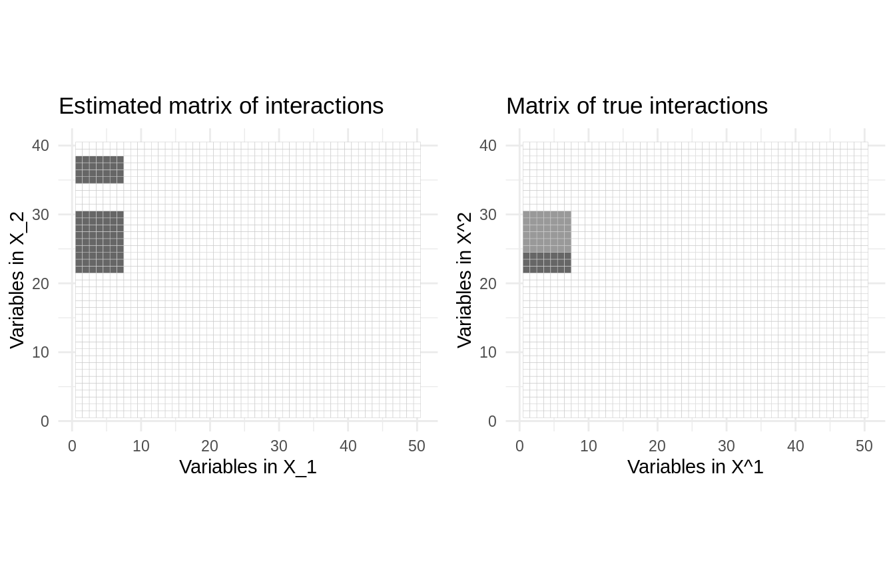
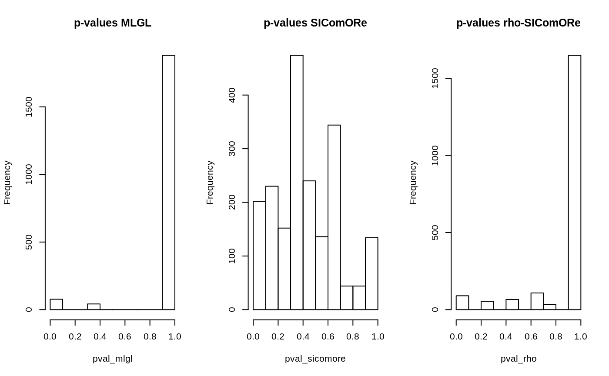

Analysis of two related data sets with SIComORe
Detect relevant interactions between structured data
SICoMORe team
2020-03-23
twoDataInteraction.RmdThis vignette illustrates how SIComORe can be used to analyze two interacting data sets whose respective sets of predictors are related jointly to a response variable. This may occur for instance when metagenomic data and genetic data are jointly used to predict a phenotype of interest: a group of OTU in the metagenomic data and a group of SNP in the genetic data may predict well jointly a response.
Requirements
On top of sicomore, this will require a couple of standard packages tailored for data manipulation, representation or benchmarking:
Statistical Model
SIComORe assumes an underlying linear model to link a phenotype (or response) of interest to a set several matrices of correlated predictors (see Ambroise et al. (2018)). In the case at hand, we consider two matrices (says, \(\mathbf{X}^{(1)}\) for the genetic data and \(\mathbf{X}^{(2)}\) for the metagenomic data). The generative model is thus
\[\begin{equation*} \mathbf{y} = \sum_{g \in \mathcal{G}^{(1)}} \phi( \mathbf{X}^{(1)}_{g}) \beta^{(1)}_g + \sum_{h \in \mathcal{G}^{(2)}} \phi( \mathbf{X}^{(2)}_{h}) \beta^{(2)}_h + \sum_{g \in \mathcal{G}^{(1)}} \sum_{h \in \mathcal{G}^{(2)}} \phi( \mathbf{X}^{(1)}_{G}) \phi( \mathbf{X}^{(2)}_{h}) \beta_{g h} + \boldsymbol\varepsilon, \qquad \boldsymbol\varepsilon \sim \mathcal{N}(\mathbf{0}_n, \mathbf{I}_n \sigma^2), \end{equation*}\] where
- \(\mathbf{y}\) is a vector of phenotype \(n\) observation,
- \(\boldsymbol\varepsilon\) is a size-\(n\) Gaussian vector of noise,
- \(\mathbf{X}^{(1)}, \mathbf{X}^{(2)}\) are genetic and metagenomic matrices of predictors with \(n\) rows and \(p^{(1)}, p^{(2)}\) columns,
- \(\mathcal{G}^{(1)}, \mathcal{G}^{(2)}\) are latent group structures with \(K^{(1)}, K^{(2)}\) groups,
- \(\phi\) is a function (typically the mean “in row”) for compressing \(\mathbf{X}^{(1)}_g, \mathbf{X}^{(2)}_g\) into a vector,
- \(\boldsymbol\beta^{(1)}, \boldsymbol\beta^{(2)}\) are vectors of main effects with respectively \(K^{(1)},K^{(2)}\) coefficients,
- \(\boldsymbol\beta\) is a vector of interaction effects with respectively \(K^{(1)} \times K^{(2)}\) coefficients.
Data sets generations
Group-structured Matrices of predictors
Data generation goes pretty much just like in the example on an single data set (see the corresponding vignette for details), but here two data sets are required.
These two data sets share a common sample size:
The first data set is composed by 50 variables spread into 5 groups approximately balanced:
p1 <- 50 # number of variables
K1 <- 5 # number of groups
grp1_size <- rmultinom(1,p1,rep(p1/K1,K1)) ## group sizes
Sigma1 <-
runif(K1,.5,.95) %>% # a vector defining within-group correlation
map2(grp1_size, ~ matrix(.x, .y, .y)) %>% bdiag()
diag(Sigma1) <- 1
X1 <- rmvnorm(n, sigma = as.matrix(Sigma1))The second data set is composed by 40 variables spread into 10 groups approximately balanced:
p2 <- 40
K2 <- 10
grp2_size <- rmultinom(1,p2,rep(p2/K2,K2)) ## group sizes
Sigma2 <-
runif(K2,.5,.95) %>% # a vector defining within-group correlation
map2(grp2_size, ~ matrix(.x, .y, .y)) %>% bdiag()
diag(Sigma2) <- 1
X2 <- rmvnorm(n, sigma = as.matrix(Sigma2))The matrices of empirical correlations of \(\mathbf{X}^{(1)}\) and \(\mathbf{X}^{(2)}\) exhibit the block structures of each data set:
par(mfrow = c(1,2))
corrplot(cor(X1), method = "color", tl.pos = "n")
corrplot(cor(X2), method = "color", tl.pos = "n")
Phenotype/Response vector
The phenotype is a linear combinaison of the compressed version of the predictors. Here, we use the mean to compressed a group of variables:
grp1_ind <- rep(1:K1, grp1_size) # vector of group indices
grp2_ind <- rep(1:K2, grp2_size) # vector of group indices
main_effects_1 <- t(rowsum(t(X1), grp1_ind)/tabulate(grp1_ind))
main_effects_2 <- t(rowsum(t(X2), grp2_ind)/tabulate(grp2_ind))This time we also need the matrix of data interactions, with size \(n \times (K^{(1)} \times K^{(2)})\).
interactions <-
map(1:K2, ~ sweep(main_effects_1, 1, main_effects_2[, .x], "*")) %>%
do.call(cbind, .)The parameters \(\boldsymbol\beta^{(1)}, \boldsymbol\beta^{(2)}\) and \(\boldsymbol\beta\) in the linear model originating the response variable are chosen such that there is \(s=2\) non-null interactions in the matrix \(\beta\):
s <- 2 # number of non-null interactions
theta <- Matrix(0, K1, K2)
theta[sample(1:(K1 * K2), s)] <- runif(s, 2, 4)The main effects associated with these interactions are drawn different from zero:
beta1 <- rep(0, K1)
beta2 <- rep(0, K2)
ind <- which(theta !=0 , arr.ind = TRUE)
beta1[ind[, 1]] <- runif(s, 1, 2)
beta2[ind[, 2]] <- runif(s, 1, 2)Finally we can draw the response vector, with a noise level aiming for coefficient of determination of 0.75 on average.
Adjusting multiple hierarchies
We try to recover the correct levels of compression only from the two original input matrices of predictors and the response vector. The main function sicomore uses by default a Ward criteria for both hierarchical clustering. At each pairs of levels in the hierarchies, a LASSO criterion is used to perform variables selection. Cross-validation is used to tune the sparisty level. All these defaults can be controlled byy the user:
res <- sicomore(
y = y, # response vector
X.list = list(X1, X2), # list of matrices of predictors
choice = c("lambda.min", "lambda.min"),
method.clus = c("ward.D2","ward.D2")
)##
## Considering hierarchy 1 - rho-sicomore selection method.
## Considering hierarchy 2 - rho-sicomore selection method.We can plot the most striking interactions with the method plot() and compare with the “true” model:
theta_full <- theta[rep(1:K1, table(grp1_ind)), rep(1:K2, table(grp2_ind))] %>% as.matrix()
plot_true <-
reshape2::melt(theta_full) %>%
ggplot(aes(Var1, Var2, fill=value)) +
geom_tile(show.legend = FALSE, colour = "grey80") +
scale_fill_gradient2(high = "grey40") +
theme_minimal() + ggtitle("Matrix of true interactions") +
labs(x = 'Variables in X^1', y = 'Variables in X^2') + coord_fixed()
plot_hat <- res$plot(main = "Estimated matrix of interactions", threshold=.05)
cowplot::plot_grid(plot_hat,plot_true, ncol = 2)
Comparison of available options for variable selection
SIComORe includes three alternative methods of selection for prediction of phenotype with grouped correlated structure, on top of the one defined in Ambroise et al. (2018). MLGL (see Grimonprez (2016), Grimonprez et al. (2019)) and the variant \(\rho\)-SIComORe in the spirit of Park, Hastie, and Tibshirani (2007). We try the 3 available options for simultaneously finding and selecting the groups of variables related to the phenotype.
out_rho <- sicomore(y, list(X1, X2), selection="rho-sicomore")
out_mlgl <- sicomore(y, list(X1, X2), selection="mlgl" )
out_sicomore <- sicomore(y, list(X1, X2), selection="sicomore" )In this case, the three method tends to produce a similar estimate of the interaction coefficients:
plot_mlgl <- out_mlgl$plot(main = "Estimated interactions (MLGL)", threshold=.05)
plot_sicomore <- out_sicomore$plot(main = "Estimated interactions (SICoMORE)", threshold=.05)
plot_rho <- out_rho$plot(main = "Estimated interactions (rho-SICoMORE)", threshold=.05)
cowplot::plot_grid( plot_mlgl, plot_rho,
plot_sicomore, plot_true, ncol = 2, nrow = 2)
The method getSignificance(effect = "beta") sends back the results of a statistical test for each set of coefficients (main effect or interaction) in the form of \(1-p\)-value. This can be used to determine at which extend a coefficient is selected (the closer from 1, the higher the probability for being non zero):
pval_mlgl <- 1 - out_mlgl$getSignificance(effect = "theta")
pval_rho <- 1 - out_rho$getSignificance(effect = "theta")
pval_sicomore <- 1 - out_sicomore$getSignificance(effect = "theta")
par(mfrow = c(1,3))
hist(pval_mlgl , main = "p-values MLGL")
hist(pval_sicomore, main = "p-values SIComORe")
hist(pval_rho , main = "p-values rho-SIComORe")
Comparison of the computation times between the 3 options
As espected, the SICoMORe variants are much faster than the MLGL one.
RHO <- expression(sicomore(y, list(X1, X2), selection="rho-sicomore", verbose=FALSE))
SICOMORE <- expression(sicomore(y, list(X1, X2), selection="sicomore" , verbose=FALSE))
MLGL <- expression(sicomore(y, list(X1, X2), selection="mlgl" , verbose=FALSE))
bench <- microbenchmark(eval(RHO), eval(SICOMORE) , eval(MLGL), times = 4)
References
Ambroise, Christophe, Julien Chiquet, Florent Guinot, and Marie Szafranski. 2018. “Fast Computation of Genome-Metagenome Interaction Effects.” arXiv Preprint arXiv:1810.12169.
Grimonprez, Q., S. Blanck, A Celisse, G. Marot, Y. Yang, and H. Zou. 2019. “MLGL: An R Package Implementing Correlated Variable Selection by Hierarchical Clustering and Group-Lasso.” https://cran.r-project.org/package=MLGL.
Grimonprez, Quentin. 2016. “Selection de Groupes de Variables Corrélées En Grande Dimension.” PhD thesis, Université de Lille; Lille 1.
Park, Mee Young, Trevor Hastie, and Robert Tibshirani. 2007. “Averaged Gene Expressions for Regression.” Biostatistics 8 (2): 212–27.